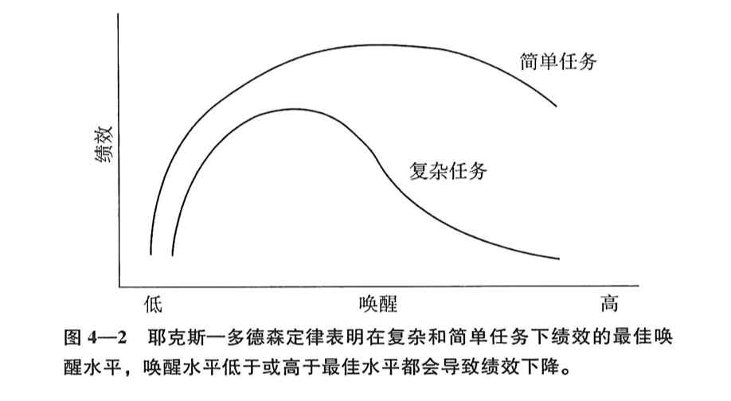
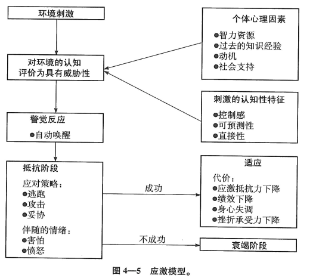

环境——行为关系理论¶
环境心理学理论的实质和作用¶
事实上，科学的方法并不仅仅是一种获取知识的具体方法。无论是环境心理学还是其他领域的科学家，他们都认为宇宙中存在着大量的规律，只要方法适当，这些规律都有可能被发现。在未进行科学研究之前，这些普遍存在的规律大都处于无序或不确定的状态，很不系统。科学（或者说科学方法）只不过是减少不确定性、了解普遍规律的一系列程序。
当然我们可能通过其他一些方法来获取知识，比如宗教。在宗教中，减少不确定性的根本是传统、信仰、启示和权威，在很多情况下还包括体验。科学方法中减少不确定性的基础是，对可观测的现象进行精确预测。
不过，这种预测并不完美，某种程度上，我们对这些现象的预测还不太准确，因为所研究的有序宇宙中有一部分还是不确定的，但我们仍将继续探索，以便进一步减少这种不确定性。
心理学研究是对人们不同的行为及思维的产生原因进行考查，这些原因包括环境因素、生物影响及心理内部的（由认知或情绪引发的）事件。
科学的因果假设中隐含着一种决定论（determinism）的哲学观点。从绝对意义上说，决定论体系与“自由意志”是相对立的。从相对意义上说，我们可以研究导致一个结果产生的诸多相互关联的决定性因素。
环境心理学家通常更注重分析和建立关系模型，不太关注环境————行为系统中的前因后果。
假说、定律和理论¶
-
观察：环境心理学通常从简单的观察开始进行科学研究。
-
假设/预测：假设观察到的现象是有某些联系的。
-
检验假设：用公开的可观察的数据来加以验证。当观测数据不支持假设时，要么修改假设，要么建立一个新的假设再去验证它。
-
解释：用抽象及理论性的结论来解释一些事实。
- 实证定律（empirical laws）：对现象间简单的可观测的关系进行论述（通常是用数学概念来表述），这些定律通常可以被反复验证，如万有引力定律。
- 理论：包含的概念和关系要比实证定律更抽象，范围更广。一般情况下，理论不是由一个实证验证而来，而是由大量的实证性关系推论而来的。如进化论、相对论、心理平衡论（如果付出与回报不相称时会对某种关系产生不满）。
- 模型（model）:比实证定律更抽象，没理论这么复杂。模型通常是以类推或比喻为基础的。模型通常是实证证明与理论形成的中间环节。模型和理论这两个概念常常被互换使用。
理论的作用¶
-
理论能帮助我们预测变量之间的关系，我们能够通过调控一个变量来控制另一个变量的变化。
-
对大量的数据加以概括。
-
把某些概念及其相互关系推广到更多的现象中去，有助于我们去总结某一特定领域的知识。**一旦有实证证据表明，某一理论的可推广性并不强，我们就应当修改或摒弃这个理论，以便使理论具有高度的可推广性。
-
它所阐明的变量间的新关系，有助于引发其他新的研究。
-
可把研究结果应用于实际问题中。
评估理论的标准：
- 一个有价值的理论应具有一定的预测性
- 好的理论能很好地概括多种实证关系
- 一个有效的理论必须具有高度的可推广性
环境——行为理论：把我们与环境的相互作用概念化¶
唤醒理论¶
唤醒（arousal）是通过大脑唤醒中心网状结构（reticular formation）引发的大脑活动的增强。
环境刺激所产生的影响之一，是提高唤醒的强度。
唤醒是评估环境的维度之一。唤醒模型通常可以预测。
不论是愉快或是不愉快的刺激，都能提高唤醒程度。
唤醒的表现：
-
唤醒会促使我们去寻找有关内部状态的信息，即我们试图去解释唤醒的实质及其原因。在一定程度上，我们根据周围人表现出来的情绪来解释唤醒。
-
我们会把自己和别人的行为进行比较，以此来评价我们的行为是否恰当，或者我们做的是比别人好些还是差些。这个过程被称为社会比较（social comparison）。
人类寻求的是中等程度的刺激水平，过高或过低的刺激水平都令人不愉快。

我们可通过环境引起的唤醒水平的高低，来预测绩效和攻击性。
环境负荷理论¶
环境负荷理论包含5方面内容：
-
我们加工外部刺激的能力是有限的，每一次对输入刺激的注意力也十分有限
-
当来自环境的信息量超过个体加工信息的最大容量时，就会导致信息超载（overload）。信息超载的一般反应是视野狭窄，即我们忽略那些与手头任务不太相关的信息，但对有关信息则给予更多关注。我们往往会积极地采取措施，以阻止无关或干扰信息的出现。
-
当一个刺激出现时（或个体觉得这个刺激出现时），就会要求个体有相应的适应性反应，该刺激的意义是由一个调节过程来评估的，随后个体会决定采取哪些应对反应。因此，一个刺激越强烈，越不可预测或不可控时，它的适应性意义就越大，需要给予越多的注意力。另外，需要适应的刺激越不确定，个体分配给它的注意力也就越多。
-
一个人的注意力并不是一个恒量，长时间的注意可能会导致耗竭。在长时间的注意要求下，注意力的总容量会超出负荷。
-
通过减少信息加工或到有利于恢复健康和体力的环境，如自然环境，注意疲劳可以得到改善。这个理论被称为注意恢复理论。
根据超负荷理论，一旦注意力容量由于长时间使用而耗竭的话，即便很小的注意要求也可能引发负荷。
刺激不足理论¶
剥夺个体所有的感觉刺激会引发严重的焦虑及其他异常心理。
一些研究显示，刺激不足对治疗厌倦有帮助。还不清楚治疗机制。
适应水平理论：最佳刺激¶
刺激的分类和维度¶
分类：
- 感觉刺激
- 社会刺激
- 运动
维度：
- 强度
- 多样性
- 模式（对结构和不确定性的感知程度）
最佳刺激¶
每个人都有一个最佳刺激水平，它是以过去的经验为基础。个体如何对环境进行评价和反应，会部分取决于该环境与个体在这个维度上适应水平的差异程度。环境与个体的适应水平差异越大，个体对此环境的反应强度也就越大。
适应和调节¶
适应：改变对刺激的反应 调节：改变刺激本身（改变环境）
对最佳刺激理论的评价：广度和特异性¶
适应水平理论融合了唤醒、超负荷和刺激不足理论中一些很好的见解。它有相当广的适用性，既适用于自然环境和社会环境，也适用于各种形式的感知觉。
该理论的难点在于，由于它承认在适应水平上存在非常多的个体差异，那么要想对环境偏好和环境行为关系进行更一般化的预测，就显得十分困难。预测所需的因素越具体，预测结论的可推广性就越小，而预测因素越概括，所得结论就越不精确。
另一个难点是，在进行预测之前我们很难确定刺激的最佳水平。我们很难确定中等水平的复杂性到底指的是什么。
行为约束理论¶
行为约束理论提出3个基本过程：
- 控制感丧失
- 阻抗
- 习得性无助
过多或不愉快的环境刺激有可能唤醒或限制我们的信息加工能力，另一个潜在影响是丧失对环境的控制感（perceived control）。
约束：指环境中某些现象限制或干扰了我们想要做的事情。约束可能来自环境，可能来自我们对环境的感觉。
当人意识到环境正在约束或限制了自己的行为时，首先会感到不舒服或其他一些消极情绪，可能会尽力重新获得对环境的控制，这种现象被称为心理阻抗（psychological reactance）或阻抗（reactance）。
任何时候，当我们感到我们的行动自由受到限制时，心理阻抗会引导我们重新获得自由。
根据行为约束模型，实际上我们并不需要体验到失控感后才不停进行反抗，我们只需要预料到，哪些环境因素将会限制我们的自由。
如果我们在重新获得行动自由的过程中，获得控制感的努力屡遭失败，最终结果是习得性无助（learned helplessness）。当我们想获得控制的尝试屡次失败后，我们就可能开始认为自己的行动对改变当前的处境无济于事，因此我们就会选择放弃获得控制，即我们“学习”到自己是无助的。
失去控制感会给我们的行为带来不良后果，重获控制感能提升我们的绩效和内心希望。
我们对环境的控制类型¶
- 行为控制：通过行为反应来改变具有威胁性的环境事件（如关掉噪声）
- 认知控制：加工有威胁的信息，主要方式为，评估事件的危险性降低或更好地了解它们
- 决策控制：从多种选择中选出一种。
有些情况下，控制感反而会导致威胁、焦虑和不适应行为的增多。
无助的观点¶
无助效应出现时，对环境的归因：
- 稳定因素而非不稳定因素（无法做某事改变现状）
- 普遍因素而非特殊因素（问题存在普遍性，无法解决）
- 内部因素而非外部因素（问题出在自己身上，而非环境）
行为约束理论的价值与局限¶
行为约束理论强调个人反应，这使我们对从整体上观察环境的需要降到最小限度。
环境应激理论¶
环境应激理论把环境中的许多因素看做是应激源，比如噪声、拥挤。应激源被认为是威胁人的健康状况的不利环境，包括工作应激、婚姻不和谐、自然灾害、搬迁的混乱等。
应激（stress）是一种调节或中介变量，被定义为对这些环境的反应。这一“反应”包含了情绪、行为和生理成分。
应激源的特性¶
-
灾难性事件（cataclysmic events）：自然灾害、战争、核事故、火灾等
- 通常是突发的，应对非常困难，可能无法马上缓解痛苦，但持续时间不长。
- 重要特征是，影响了很多人，人们在应对时可参照其他人的反应。
- 当一个应激源没法解决时，各种不同的问题会随之产生，习得性无助就是其中之一。
-
个人应激源（personal stressors）：疾病、亲人死亡或失业等。
- 特征是，在同一时间内个人应激源要比灾难性事件影响的人数要少一些，可能在预料之中或预料之外。
- 个人应激源在广度、持续时间和严重程度上与灾难性事件十分相似。
- 因为影响到的人数少，所以提供社会支持的人也会少。灾难性事件也会导致的个人应激源产生。
-
背景应激源（background stressors）
- 特征：强度较低、持续时间长、几乎成为常规的应激源。
- 分类：
- 生活事件（daily hassles）：稳定的但强度不大的日常生活问题，可能每次都不一样，影响到的可能只是某个人
- 环境刺激（ambient stressors）：长期的整体的环境状态，比如环境污染、噪声、拥挤、交通拥堵等。影响的是一个群体，长期、缓慢且很难通过个体的努力来解决。强度不大，有些不易被觉察。
任何一个或两个背景应激源不足以造成大的适应困难，但很多背景应激源同时发生时，它们会占用我们很多的时间，而且可能会像灾难性事件或个人应激源一样严重。
从长远看，经常长时间接触某一低强度的背景应激源，可能比接触强度更大的应激源需要更多的适应性反应。
对于背景应激源来说，通常很难确认最坏的情况已过去，或一点也不清楚情况是否会好转。应对这类应激源或与有类似经历的人交流，这些行动所带来的益处可能不像面对其他应激源那样明显。换句话说，我们可能不太可能为背景应激源做准备。
应激源的评价¶
-
在不同环境下，某个事件可能属于也可能不属于应激源。
-
同一环境下，某个事件对于某些人来说是应激源，对另一些人可能不是。
-
一个事件是否具有应激性取决于多种因素，包括事件本身的特点和个体对它的评价方式（影响评价方式的因素可能包含个体的心理因素，如智力水平、过去的知识经验、动机，和这个特定的刺激情境的认知方面，如刺激的可控制性、刺激的可预测性，即时刺激和定时刺激的共同作用）。
-
应激过程的开始，必定是人们认为某个刺激有威胁的认知评价（appraisal）。
-
同样的刺激，在一种情况下可能是无应激性的，在另一种情况下则有应激性。
-
对一个即将发生的负性事件，也常足以引发一个应激反应，即使这个事件本身并没有真正发生。
-
评价类型：
-
伤害-损失评价（harm or loss appraisal）：主要关注已造成的损坏。
-
威胁性评价(threat appraisals)：关注未来的危险。
-
挑战性评价（challenge appraisals）:关注于战胜应激的可能性。
-
-
影响评价的因素：
- 不确定情况的特点（比如噪声有多响）
- 情境条件（我们所做的措施是否有效）
- 个体差异
- 环境
- 社会和心理变量
-
应对风格或行为模式：
- 压抑-敏感化
- 筛选（对应激源进行筛选排序）
- 否认（对存在的问题忽视或压抑的程度）
-
社会支持：
- 得到他人的关心和肯定
- 归属感
-
应激反应的特点
-
生理反应：对应激性或厌恶性刺激的部分反应是自动的。
一般适应结合征（general adaptation syndrome,GAS,Selye）有三个阶段：
- 警觉
- 抵抗
- 衰竭
-
应对策略：个体和情境两个因素共同作用的结果。包括逃离、身体或口头攻击、一些承诺。如没能成功应对，人们更容易把情境评估为危险状态。
应对策略的分类：
- 直接行动或以问题为中心
- 缓解或以情绪为中心
人们更多会使用缓解策略
-
适应 ：如果应对反应不足以对付这个应激源，而所有的应对能量已用尽，有机体将进入第三个阶段，衰竭阶段，心理学把这个过程称为适应。
出现适应某种刺激的主要原因在于，对该刺激的神经敏感度越来越弱，该刺激的不确定性在减少，或者对该刺激的威胁性被评价越来越少。

几乎生活中的所有事件，包括出生、入学、在交通高峰期间驾车等，都具有不同程度的应激性。很显然，经历过一个应激事件并已学会如何应付的人，才能更好地应对生活中的下一个应激性事件。只要应对应激，这种经验既能提高自信心，也可发展应对技能。不过，面对并适应应激性事件也可能需要付出代价。任何一个时候，当所有的应激总和远远超出了个体的应对能力，就不可避免地会导致某些身体或心理上的崩溃。
适应一个持久或过度的刺激所要付出的代价，常常是身心紊乱、工作绩效减少以及抵抗力下降。以及，出现认知超负荷。
- 后效（aftereffects）。个体适应了刺激后，也就是应激源消失之后，一些长期的影响或者后效就会凸显出来。不断接触应激源，个体的适应性能量就会逐渐耗尽，从而造成后效以及以后应对能力的下降。
-
巴克的生态心理学¶
这个理论的主要特点在于，关注环境对行为的具体影响。
人员配置理论¶
-
最小维持量（maintenance minimum）,即维持一个行为背景有效所需要的最少成员数量
-
容量（capacity）,指一个有效的行为背景最多能容纳的成员数量
-
申请者（applicants）,指符合背景要求并且愿意参与其中的人
-
执行者（performers），执行首要任务的成员
-
次要执行者（nonperformers）,指处于从属地位的人。
人员不足（undersatffed）:如果一个背景中的成员数量低于最小维持量，其中的部分乃至全部成员必须承担更多的角色责任，这样才能维持行为背景的存在。
人员不足的后果¶
- 时间和努力
- 为保持背景的运行加倍努力
- 为保持背景的运行而增加工作时间
- 参与性、任务和角色
- 参与更多的任务和担任更多的角色
- 参与更困难和更重要的任务
- 责任、对自我和他人的认识
- 对行为背景的任务承担更多的责任
- 根据任务特性来认识自我
- 根据任务特性来认识他人
- 他人认识到你的重要性
- 对差异的态度
- 更少关注个体的人格差异
- 更少关注个体的与任务无关的差异
- 降低标准录用申请者
- 绩效、成功、失败
- 能够接受自己水平更低的绩效
- 能够接受他人水平更低的绩效
- 对成功的环境缺乏安全感
- 经常遭受成功或失败
- 调整一个行为背景内人数的措施：
- 调整申请者进入背景：
- 预约进入时间
- 增加或减少新成员
- 提高或降低入选标准
- 让申请者在特定区域等待
- 禁止非正常途径的参与
- 调整背景容量：
- 改变物理背景的管理或容量
- 改变背景的开放时间
- 增加或减少从事申请事务的工作人员数量
- 根据申请者的不同要求来安排工作人员的业务
- 调整申请者和已有成员在背景中的时间：
- 根据不同的比率确定申请者数量
- 改变开放时间的限制
- 按时间长短收取费用
- 对不同类型的申请者采取优先权制度
- 改变现有的行为方式来促使申请者的人员流动
团体规模越小，成员的集体归属感越强，并感觉自己在集体中扮演着重要角色。老成员会对新成员开放。
生态心理学必须采用现场观察的方法，且不能在实验中明确具体的因果关系。